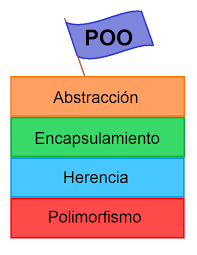

A programación orientada a obxectos (POO) é un paradigma. Un paradigma de programación representa un enfoque particular ou filosofía para a construcción de software .
Nas últimas décadas, a orientación a obxectos popularizouse enormemente e na actualidade existen un gran número de linguaxes de programación que soportan a orientación a obxectos.
Para o desenvolvemento de software, a POO ten varias vantaxes:
Fomenta unha metodoloxía baseada en compoñentes de maneira que as aplicacións xéranse como un conxunto de obxectos de tal forma que:
Posteriormente será doado ampliar o sistema simplemente agregándolle funcionalidade aos obxectos xa existentes ou xerando obxectos novos,
De ser necesario, poderán volverse a utilizar os obxectos xa creados cando desenvolva unha nova aplicación, co cal reducirá substancialmente o tempo de desenvolvemento dun sistema.
Para poder desenvolverse con soltura dentro deste paradigma, a parte de coñecer con claridade os conceptos relacionados cos propios obxectos, como instancia, clase, atributos
e métodos, é necesario comprender outros aspectos tales como abstracción, herdanza, polimorfismo e encapsulación.
Outros conceptos tamén importantes son: o envío de mensaxes, as asociacións, e a agregación.